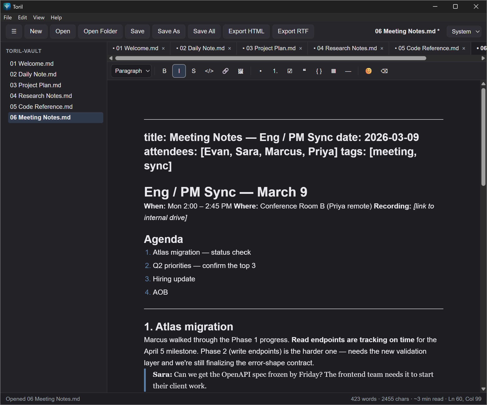

A WYSIWYG markdown editor for plain files.
Your markdown renders in place as you type, with no separate preview pane. Notes stay plain .md in ordinary folders, so a workspace can also be a live Obsidian vault.
Toril edits markdown and HTML in place. It saves atomically, keeps a local history of every save, and won't silently overwrite a note that another app or a sync client changed. It ships as a small native app built on Tauri and Rust, not a bundled browser.

Everything here is in the current release. What isn't built yet is listed further down.
Type # and the line becomes a heading in place. Supports CommonMark and GitHub Flavored Markdown (tables, task lists, footnotes, strikethrough) plus emoji shortcodes, with a formatting toolbar.
Notes are ordinary .md files. Toril writes markdown the way Obsidian does and keeps YAML, TOML or JSON front matter byte-for-byte, editable as typed properties above the note.
Every write is a temp file, an fsync, then a rename, so a crash mid-save can't corrupt a note. Optional autosave, and unsaved work is restored after a crash.
Every save keeps a local snapshot. Diff against any earlier version and restore it in one click. History lives outside your vault, so it never clutters your folders.
When Obsidian, Dropbox or another app changes an open note, Toril merges the change. If both sides edited the same lines, it saves the losing side as a conflict copy, so no edit is ever thrown away.
File sidebar with new, rename and delete. Deleted notes go to a .trash folder you can undo from. Also tabs, a document outline, Find & Replace, recent files and drag-and-drop open.
Open, edit and save .html files in the same editor, which is handy for documents AI assistants produce. Markup is sanitized as it loads, so nothing in a file can run. Save As converts between the two formats.
Export to standalone HTML or RTF, paste an image from the clipboard straight into a note, switch between light, dark and system themes, and zoom the text.
Toril tells you when a new version is out and never installs one behind your back. It won't restart while anything is unsaved. There's no account and no telemetry.
Some of this is deliberate. Some is simply not built yet.
The safety work is done: atomic saves, autosave, crash recovery, version history, safe delete, and coexisting with sync clients. Next up is turning the editor into a notes system, with vault-wide search, wikilinks and backlinks.
An optional AI assist using your own API key or a local model is planned further out. None of it is built yet.
The name: in the Spanish bullring, el toril is the pen where the bull waits before it charges. It's a nod to Tauri (the bull) and to writing (the pen).
Installers for Windows (.exe, .msi), macOS (Apple Silicon and Intel) and Linux (AppImage, .deb, .rpm). Free, Apache-2.0, and nothing to sign up for.
Windows is the primary platform · Installed copies update themselves from v1.1.0 on · Changelog